About
I am Full Professor of Actuarial Science at HEC Lausanne, University of Lausanne, in the Department of Actuarial Science.
My research lies in theoretical stochastic analysis and applied probability, with a particular focus on rare events, extremes of random fields, regular variation, shift-invariant structures, multivariate dependence, and the representation of fundamental asymptotic constants. In connection with my actuarial background, I also work on applied problems in non-life insurance, risk management and financial mathematics.
Before joining the University of Lausanne I led the non-life pricing team at Allianz Suisse. I have held the Venia Docendi in applied stochastics at the University of Bern since 2004, with the title of Privatdozent, and I am a qualified actuary (SAA). I obtained my PhD at the University of Bern in 1999 under the supervision of Jürg Hüsler.
Editorial boards
- Extremes
- Journal of Applied Probability
- Probability and Mathematical Statistics
- Statistics & Probability Letters
- Spanish Journal of Statistics
Positions & education
- Present
- Professor of Actuarial Science, HEC Lausanne
- since 2004
- Privatdozent, applied stochastics, University of Bern
- 2005–2010
- Head of non-life pricing, Allianz Suisse
- 2000–2005
- Reserving actuary, Allianz Suisse
- 1999
- PhD, University of Bern (advisor: Jürg Hüsler)
- 1994–1996
- Actuary, INSIG, Tirana
Research
Themes that recur across my work:
- Extremes of random fields
- Rare events
- Regular variation
- Shift-invariant structures
- Multivariate dependence
- Asymptotic constants
- Non-life insurance
- Risk management
- Financial mathematics
Long-standing collaborators
Georgiy Shevchenko, Krzysztof Dębicki, Zbigniew Michna, among many others.
Recent preprints & manuscripts
Work in progress and papers under review. The complete, up-to-date list of published articles is on IRIS.
-
2026
Branch-stationary max-stable fields on rooted trees
E. Hashorva, S. Novikov
-
2026
Parisian ruin of branching Brownian motion
E. Hashorva, S. Novikov, T. Shashkov
-
2026
Covariance decay for Gaussian queues
K. Dębicki, E. Hashorva, S. Novikov
-
2026
Gumbel MDA & tail behaviour of infima of Gaussian processes
K. Dębicki, E. Hashorva, S. Novikov
-
2026
Tail and density asymptotics for Gaussian exponential integrals
E. Hashorva, S. Novikov
-
2026
-
2026
-
2026
-
2025
Sojourns of vector-valued stationary Gaussian random fields
K. Dębicki, E. Hashorva, Z. Michna
Gallery
Interactive illustrations of objects from recent papers. Everything is simulated live in your browser — move the sliders.
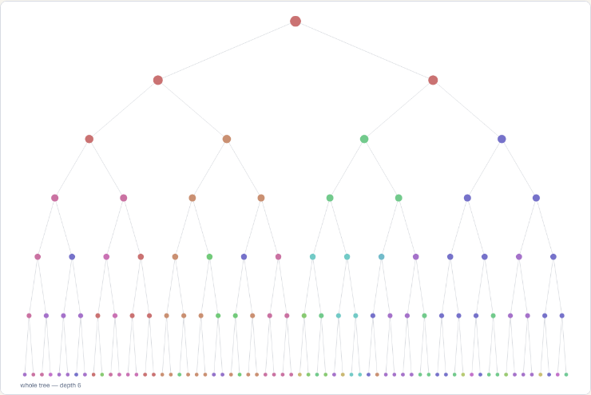
A max-stable field on a binary tree
Brown–Resnick construction driven by a Gaussian branching random walk. Colours show which Poisson point wins at each vertex; zoom into any subtree and it looks like the whole.
Open →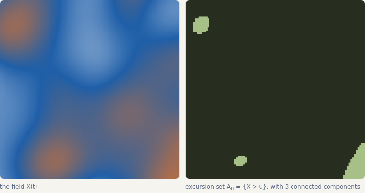
Where the Euler characteristic ends and Pickands begins
Turn the roughness α of a Gaussian field from 2 downwards: the Euler-characteristic heuristic gives way to Pickands–Piterbarg asymptotics and the constant ℋα. A companion to Pavel Ievlev's illustration.
Open →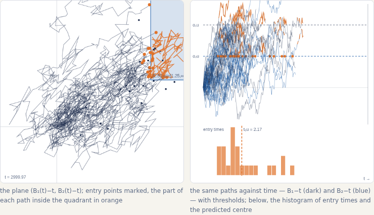
Hitting a quadrant
Animated: the rare correlated Brownian paths with drift that ever enter a quadrant. Raise the correlation and watch the entry point move from the corner to the edge — the dimension reduction of Dębicki, Hashorva, Ji & Rolski.
Open →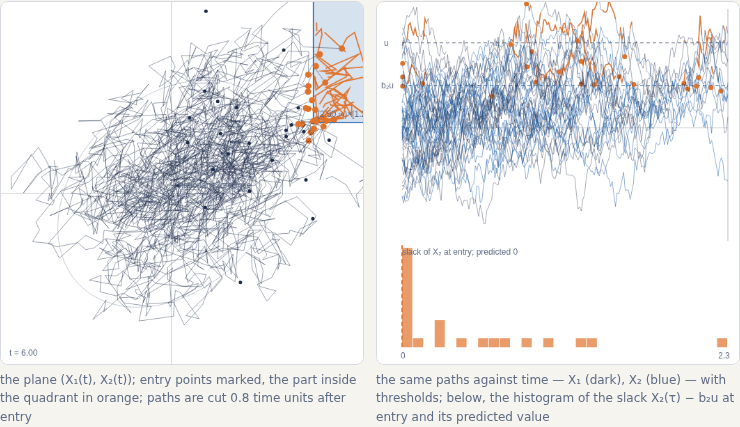
Simultaneous exceedance, stationary case
The Ornstein–Uhlenbeck companion: entry times are uniform, so dimension reduction shows up as the slack of the second coordinate at entry. From Dębicki, Hashorva & Wang.
Open →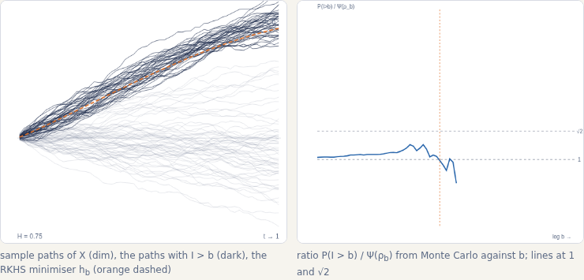
The most likely path of a large exponential integral
For ∫eX with X fractional Brownian, the paths that exceed a large b cluster around the RKHS minimiser, and the Jensen–Gaussian bound is exact for H > ½, off by √2 at H = ½. From Hashorva & Novikov.
Open →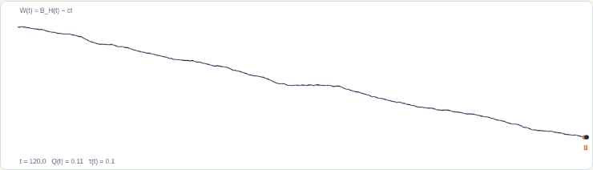
How long does a Gaussian queue remember?
The workload of a queue fed by fractional Brownian motion inherits the memory of its input: Cov(Q(0), Q(r)) ~ H(2H−1)(Eτ)² r2H−2, with Brownian input the exponential exception. From Dębicki, Hashorva & Novikov.
Open →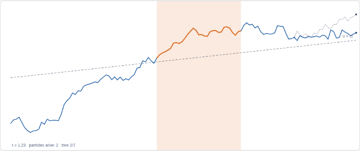
Parisian ruin of branching Brownian motion
Animated trees in which every particle alive stays above the line u + ct for a whole window: probability C e−κu, κ = c + √(c²+2β), with the ruin time centred at u/a. From Hashorva, Novikov & Shashkov.
Open →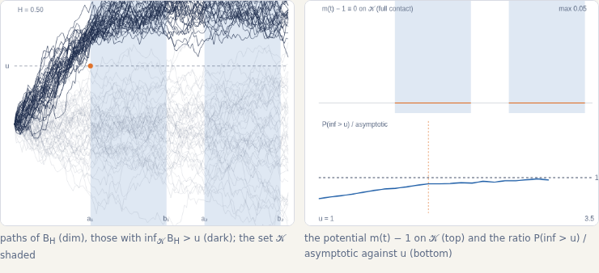
Staying high everywhere
The infimum of fractional Brownian motion over two intervals: for H > ½ the conditioned paths touch the level at one point and lift off; for Brownian motion they hug it everywhere — dominated versus full contact. From Dębicki, Hashorva & Novikov.
Open →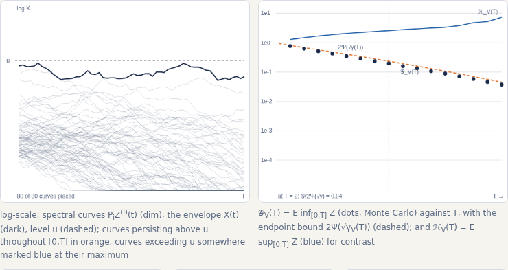
Persistence of a Brown–Resnick process
The max-stable envelope assembled from its log-normal spectral curves; how many exceed a level somewhere (Pickands, linear in T) versus throughout (the expected infimum 𝒢V(T), decaying like 2Ψ(√γV(T)) for H > ½). From Dębicki, Hashorva & Novikov.
Open →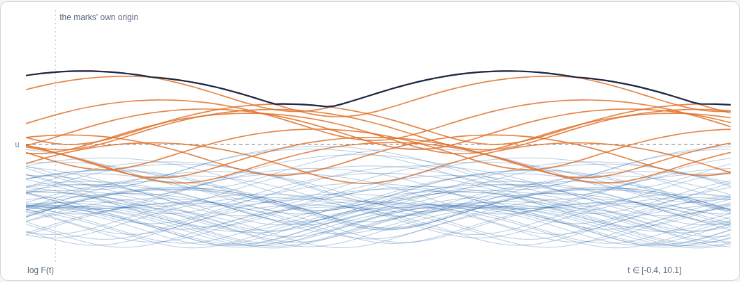
A particle system with no clock of its own
Poisson-rescaled copies of one mark: the system is stationary although every curve is anchored at its own origin, and a mixture of two non-stationary components can be stationary. From Hashorva.
Open →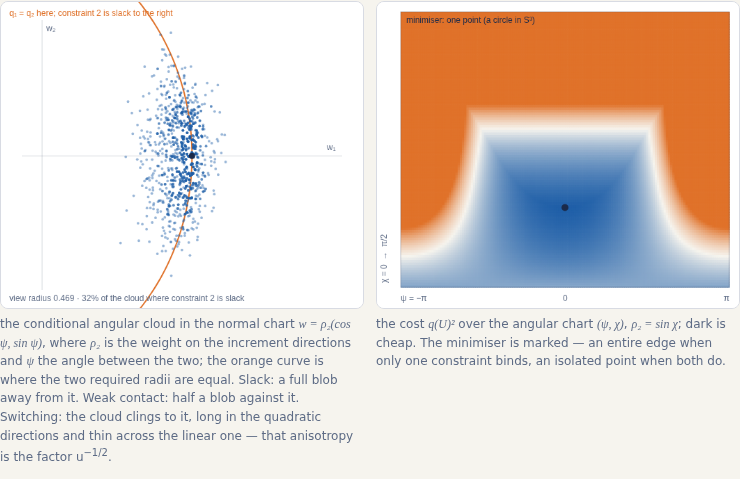
The angle a rare event chooses
Two constraints on a squared Brownian norm: as the threshold ratio moves, the conditional angular cloud turns from a full Gaussian blob to exactly half of one, then clings to the switching curve and costs a factor u−1/2. From Hashorva.
Open →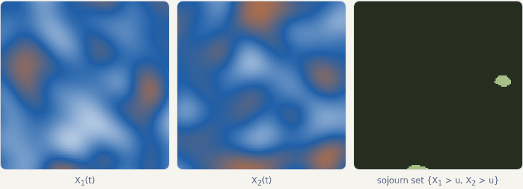
Sojourns of a bivariate Gaussian field
Two correlated stationary components on a square; the set where both exceed a level u, and how its area decays as u grows.
Open →Students & postdocs
Current PhD students
- Svyatoslav Novikov
- Timofei Shashkov
- Chao Lu
- Simone Deponte
- Maria Murillo Hernández
Past postdocs
- Sebastian Engelke
- Krzysztof Bisewski
- Jinzhu Li
- Pavel Ievlev
- Nikolai Kriukov
Completed PhDs (University of Lausanne)
- 2024
- Pavel Ievlev
- 2022
- Nikolai Kriukov
- 2021
- Grigori Jasnovidov
- 2021
- Konrad Krystecki
- 2018
- Long Bai
- 2018
- Maissa Tamraz
- 2017
- Julia Farkas
- 2016
- Gildas Ratovomirija
- 2014
- Lanpeng Ji
- 2014
- Chengxiu Ling
- 2014
- Zhichao Weng
Actuarial practice
Contact
- enkelejd.hashorva@unil.ch
- Office
- Extranef 205
- Address
- Department of Actuarial Science
HEC Lausanne, University of Lausanne
Quartier UNIL-Chamberonne, Bâtiment Extranef
CH-1015 Lausanne, Switzerland
- Department
- Actuarial Science @ HEC Lausanne
- Profiles
- IRIS · ORCID · Google Scholar